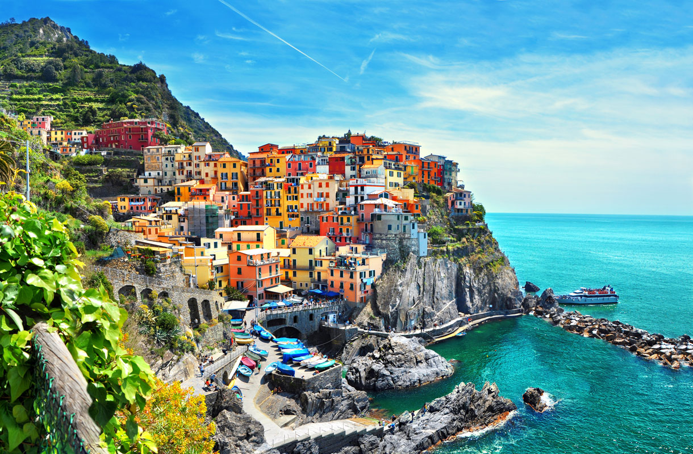
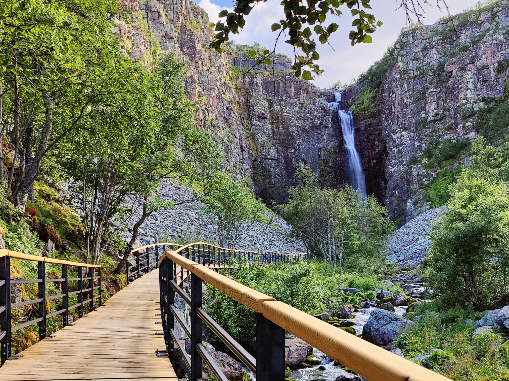
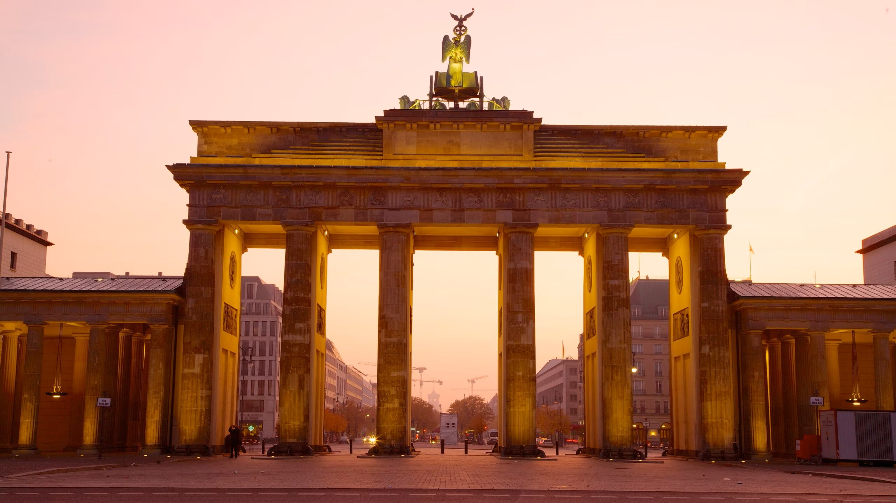
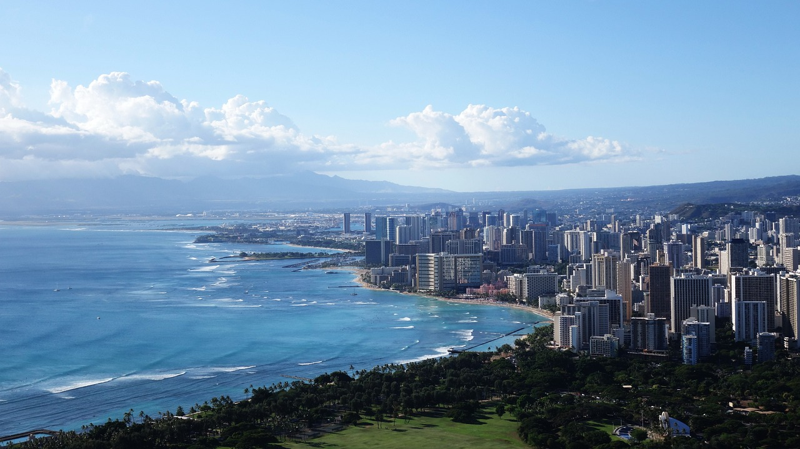
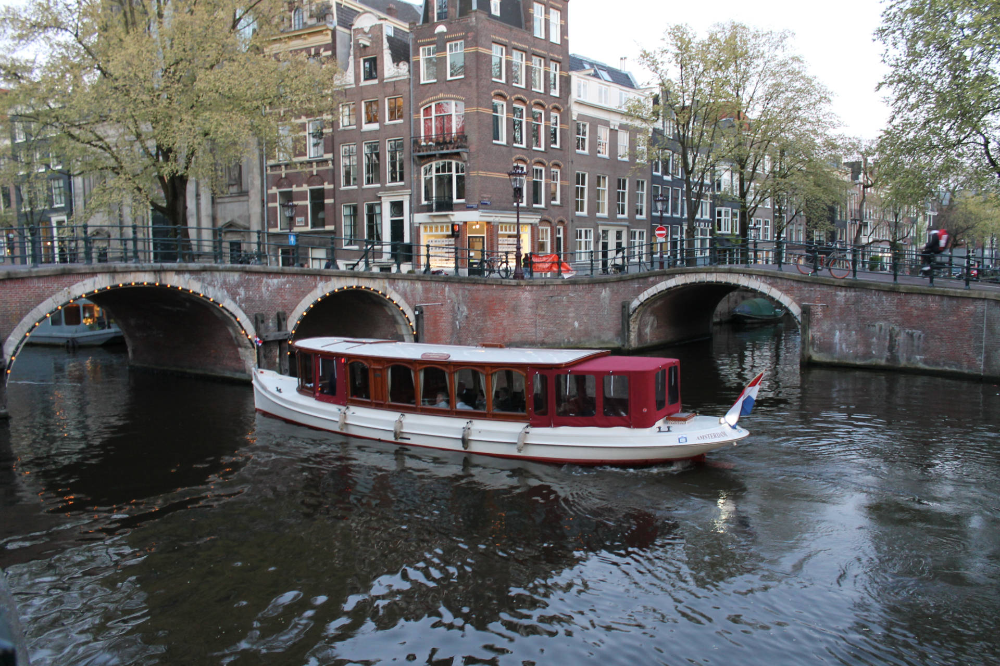
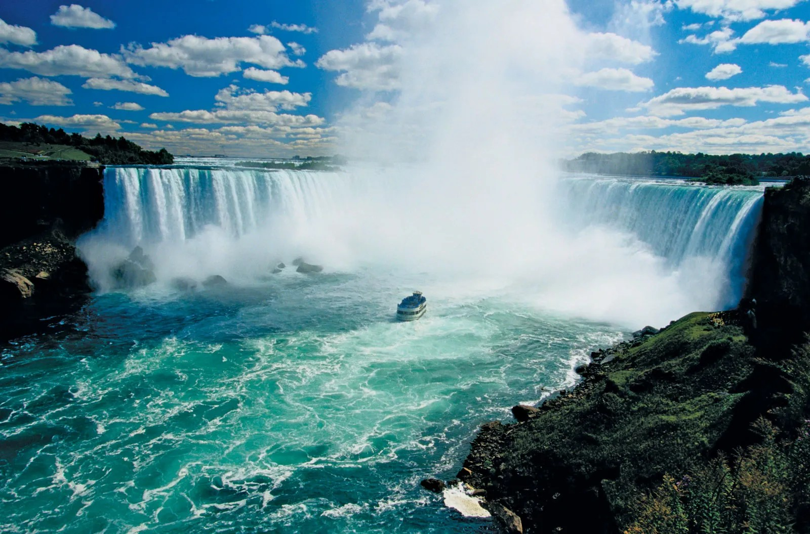

MatkaKohteet.FI
Matkakohteet.FI tarjoaa edullisia ja laadukkaita lentoja eri puolille maapalloa tarpeesi mukaan
Nähtävyyksiä ja hotelleja
- Tarjoamme hotelleja jo ennen lentoa jottei sinun tarvitse maassa etsiä sokkona sopivaa sinulle.
- Nähtävyys turisti opas kuuluu lentoon mukaan!
Hinnasto
Hinnat hyppivät edullisista laadukkaimpiin, 80-1000eur.
Päivät (kauan)
Tarjoamme suosituspäivämäärän ja voit itse lisätä niihin jos haluat.
Lähi hotellit
Hotelleja tarjoamme edullisista laadukkaimpiin, parasta kummaltakin puolelta!
- Hotel1 70eur/pv (budjetti) - Varaus tapahtuu lentoa tilatessa!
- Hotel2 120eur/pv (Keskiverto) - Varaus tapahtuu lentoa tilatessa!
- Hotel3 180eur/Pv (laadukkain) - Varaus tapahtuu lentoa tilatessa!
Italia
Italia tunnetaan historiallisista kaupungeistaan, kauniista maisemistaan ja herkullisesta ruoastaan.
Nähtävyydet
- Colosseum
- Vatikaanivaltio
- Venetsian kanavat
- Amalfin rannikko
- Milano - Muodin pääkaupunki
Hinnasto
Lennot alk. 250 €, hotellit alk. 80 €/yö, ruokailu alk. 15 €/ateria.
Päivät (kauan)
Suositeltu vierailun kesto: 3-5 päivää.
Lähi hotellit
- Hotel Rome Center - Varaa nyt "korjauksessa!"
- Venice Lagoon Hotel - Varaa nyt "korjauksessa!"
- Florence Boutique Stay - Varaa nyt "korjauksessa!"
Turistiopas
Paras aika matkustaa on keväällä ja syksyllä, jolloin sää on miellyttävä ja turistimäärät ovat vähäisempiä. Muista maistaa paikallisia pastaruokia ja gelatoa!
Ruotsi
Ruotsi tarjoaa kauniita saaristoja, moderneja kaupunkeja ja runsaita metsiä. Tukholma on erityisen suosittu kohde.
Nähtävyydet
- Gamla Stan - Tukholman vanhakaupunki
- Vasa-museo
- Lapin revontulet
- Göteborgin saaristo
Hinnasto
Lennot alk. 150 €, hotellit alk. 100 €/yö, ruokailu alk. 20 €/ateria.
Päivät (kauan)
Suositeltu vierailun kesto: 4-6 päivää.
Lähi hotellit
- Tukholma City Hotel - Varaa nyt "korjauksessa!"
- Göteborg Riverside - Varaa nyt "korjauksessa!"
Turistiopas
Talvella voit kokea pohjoisen revontulet, ja kesällä Ruotsin saaristo on parhaimmillaan. Kokeile paikallista ruotsalaista herkkua, kuten kanelipullia ja lihapullia.
Saksa
Saksa on kulttuurihistorian aarreaitta, jossa yhdistyvät moderni kaupunkielämä ja perinteiset linnat.
Nähtävyydet
- Berliinin muuri
- Neuschwansteinin linna
- Münchenin Oktoberfest
- Reinin jokilaakso
Hinnasto
Lennot alk. 180 €, hotellit alk. 70 €/yö, ruokailu alk. 12 €/ateria.
Päivät (kauan)
Suositeltu vierailun kesto: 5-7 päivää.
Lähi hotellit
- Berlin Central Stay - Varaa nyt "korjauksessa!"
- München Park Hotel - Varaa nyt "korjauksessa!"
Turistiopas
Vieraile syksyllä Oktoberfestin aikaan tai kesällä nauttimassa Reinin laakson viinitiloista.
Hawai
Hawai on tunnettu kauniista rannoistaan, trooppisista sademetsistään ja rentouttavasta ilmapiiristään.
Nähtävyydet
- Waikiki Beach
- Haleakalā-tulivuori
- Hana Road - Maui
- Napali Coast
Hinnasto
Lennot alk. 800 €, hotellit alk. 150 €/yö, ruokailu alk. 25 €/ateria.
Päivät (kauan)
Suositeltu vierailun kesto: 7-10 päivää.
Lähi hotellit
- Waikiki Resort - Varaa nyt "korjauksessa!"
- Maui Beachfront Stay - Varaa nyt "korjauksessa!"
Turistiopas
Parasta aikaa vierailla Hawaiilla on keväällä ja syksyllä. Tutustu paikalliseen kulttuuriin hula-tanssin ja ukulelen kautta.
Alankomaat
Alankomaat tunnetaan tuulimyllyistään, tulppaaneistaan ja Amsterdamin vilkkaasta kulttuurielämästä.
Nähtävyydet
- Keukenhofin tulppaanikentät
- Amsterdamin kanavat
- Van Gogh -museo
- Zaanse Schansin tuulimyllyt
Hinnasto
Lennot alk. 200 €, hotellit alk. 90 €/yö, ruokailu alk. 15 €/ateria.
Päivät (kauan)
Suositeltu vierailun kesto: 4-6 päivää.
Lähi hotellit
- Amsterdam City Stay - Varaa nyt "korjauksessa!"
- Rotterdam Riverside - Varaa nyt "korjauksessa!"
Turistiopas
Paras aika matkustaa on keväällä, jolloin tulppaanit kukkivat. Kävele kanavien varrella ja kokeile hollantilaista juustoa.
Kanada
Kanada tarjoaa laajoja kansallispuistoja, vilkkaita suurkaupunkeja ja unohtumattomia maisemia, kuten Niagaran putoukset.
Nähtävyydet
- Niagara Falls
- Banffin kansallispuisto
- Toronto CN Tower
- Vancouverin saari
Hinnasto
Lennot alk. 500 €, hotellit alk. 100 €/yö, ruokailu alk. 20 €/ateria.
Päivät (kauan)
Suositeltu vierailun kesto: 7-10 päivää.
Lähi hotellit
- Toronto Downtown Hotel - Varaa nyt "korjauksessa!"
- Banff Mountain Lodge - Varaa nyt "korjauksessa!"
Turistiopas
Talvella voit nauttia hiihtämisestä, kun taas kesällä patikointi kansallispuistoissa on suosittua. Kanada on ystävällisten ihmisten ja upean luonnon maa.